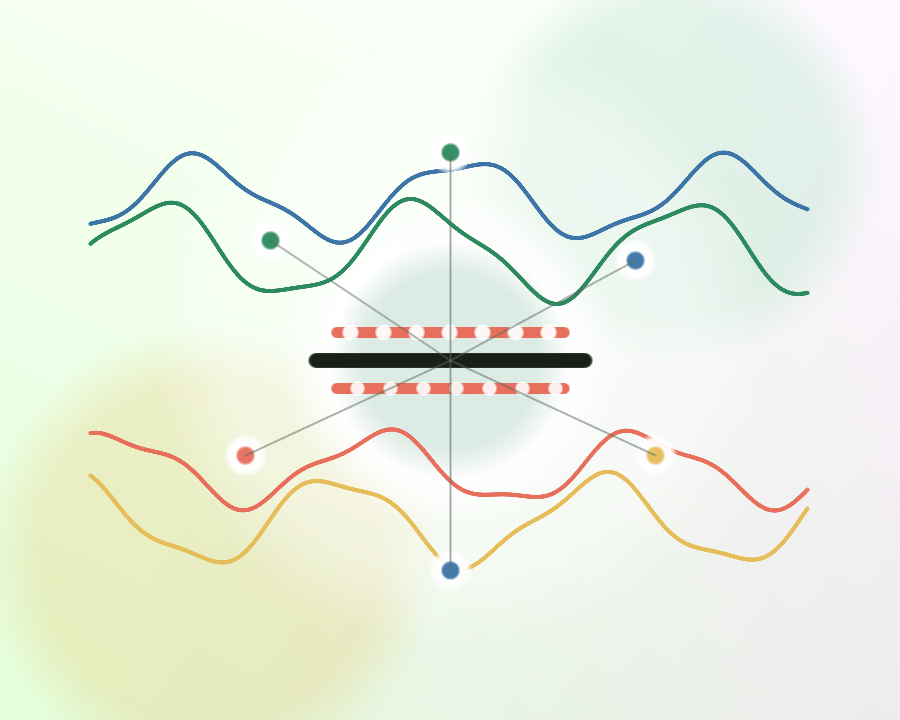

Entrenamiento de voz en español
Diccion
Practica articulación, ritmo y expresión con rutinas breves. Lee en voz alta, graba tu intento y compara la claridad de tu pronunciación.

Tiempo
0 min
Prácticas
0
Ritmo
100 ppm
Objetivo
claridad
Texto de práctica
Precisión con trabalenguas
03:00
Enfoque
Preparación
La grabación se queda en tu navegador.
Retroalimentación
Claridad al leer
--
coincidencia
Método
Rutina de 10 minutos
1. Respirar
Inhala 4 tiempos, pausa 2, exhala 6. Repite cinco veces.
2. Articular
Exagera vocales y consonantes, luego reduce hasta sonar natural.
3. Leer
Lee una vez lento, una conversacional y una con intención.
4. Comparar
Escucha tu grabación y repite la frase menos clara.